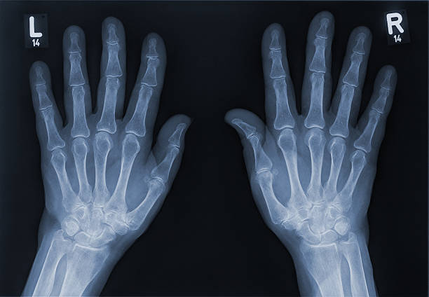
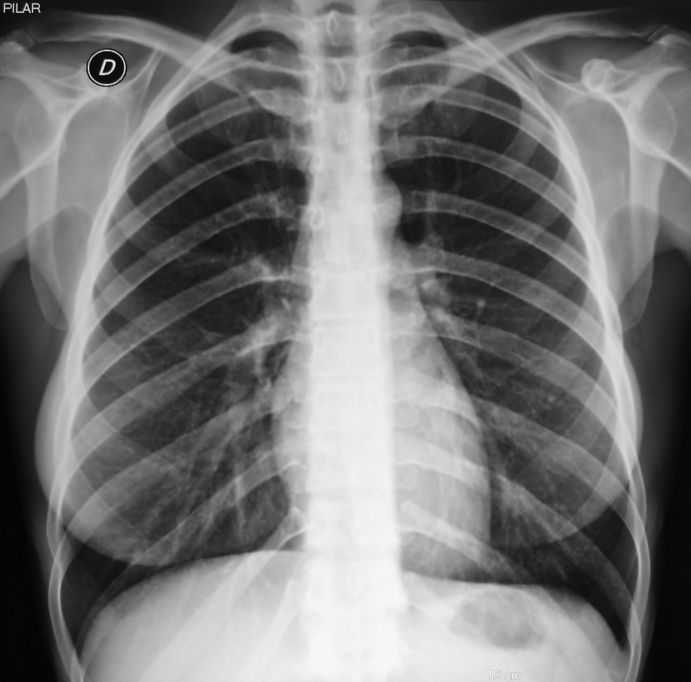
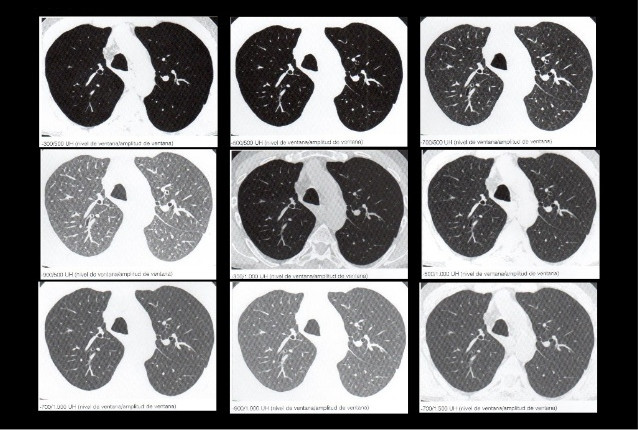
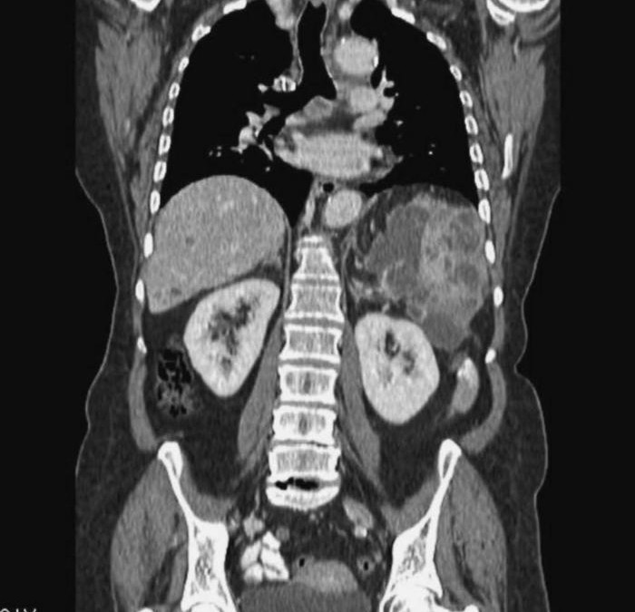
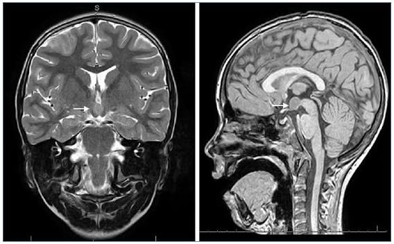
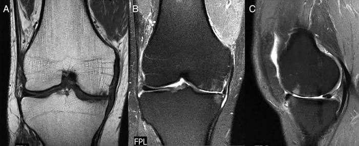

Radiología Digital
Estudios radiográficos destinados al diagnóstico de lesiones óseas, patologías pulmonares y múltiples aplicaciones médicas.


Centro de Diagnóstico por Imágenes
Contamos con equipamiento de última generación para realizar estudios de diagnóstico por imágenes con la mayor calidad y precisión.
Estudios radiográficos destinados al diagnóstico de lesiones óseas, patologías pulmonares y múltiples aplicaciones médicas.


Obtención de imágenes de alta resolución mediante cortes anatómicos que permiten un diagnóstico rápido y preciso.


Técnica de diagnóstico que utiliza campos magnéticos para obtener imágenes detalladas de órganos y tejidos.

